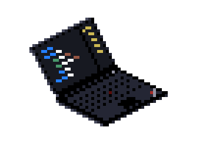

Coding.
I have an interest in Code style, Extensibility and Design patterns.
The projects I work on are mostly C# and Java, I also know SQL, XMAL and HTML/CSS.
Have a look at my GitHub
Design.
I study and practise User centered design.
I’m versed in, Surveys, User flows, Use cases, Persona’s and user journey flows.
Here are some templates I set up for recent projects.

Planning.
On recent projects I took on the role of Scrum master.
I make planning for Research, Design and Implement phases. I know how to find blockings and schedule accordingly.I mostly use Trello, here are some examples of Tasks I set up.

Creating.
I started doing 2D animations when i was a kid, using an Amiga 500 loaded with ProMotion
I’m versed in, Surveys, User flows, Use cases, Persona’s and user journey flows.
Have a look at my other skills